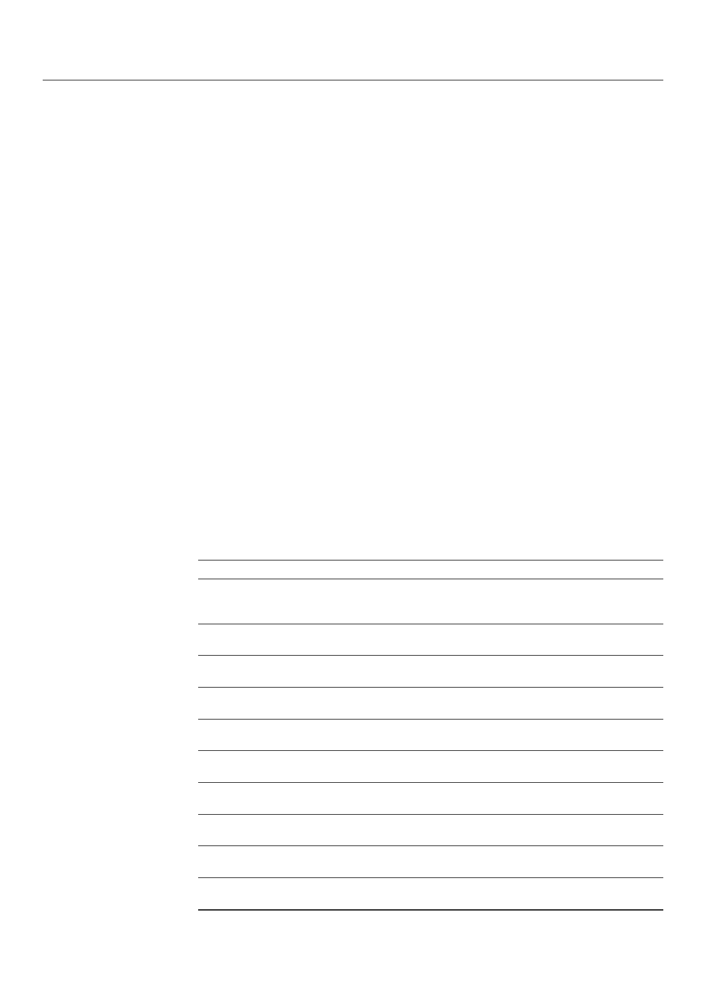

Materials 2021, 14, 2030
5 of 15
2.7. Scanning Electron Microscopy (SEM)
The surfaces of the titanium alloy, zirconia, and CoCr alloy disks were examined for bacte-
rial attachment using a scanning electron microscope. The disks were mounted on aluminum
stubs and sputter-coated with gold-palladium. The samples were then examined using a
Zeiss Merlin field-emission scanning electron microscope (Zeiss, Oberkochen, Germany).
2.8. Fluorescence Microscopy
The surfaces of the titanium alloy, zirconia, and CoCr alloy disks were examined for
bacterial viability using fluorescence microscopy. The specimens were stained with the
LIVE/DEAD kit according to the manufacturer’s instructions (LIVE/DEAD™ BacLight™
Bacterial Viability Kit, Molecular Probes, Art. No. L7012, Invitrogen, Molecular probes,
Eugene, OR, USA) and examined using fluorescence microscopy (Nikon Eclipse LV 100).
2.9. Statistical Analyses
The results are presented as the mean with standard deviations. All data were statisti-
cally analyzed from three independent experiments using the Student’s t-test. Values of
p < 0.05 were considered to indicate statistical significance. Statistical analyses were per-
formed using StatSoft Statistica 10.0 (licensed to the Medical University of Warsaw).
3. Results
3.1. Drug Susceptibility Profiles
The strains were resistant to cefoxitin 3/33 (9%), gentamycin 5/33 (15.2%), tobramycin 6/33
(18.2%), ciprofloxacin 11/33 (33.3%), levofloxacin 5/33 (15.2%), erythromycin 22/33 (66.6%),
clindamycin 18/33 (54.5%), tetracycline 4/33 (12.1%), and trimethoprim/sulfamethoxazole
1/33 (3%). However, all strains were sensitive to linezolid, teicoplanin, and vancomycin.
Methicillin resistance was observed in 3/33 strains (9%). The antibiotic resistance phenotypes
of each isolate determined using diffusion discs on agar are presented in Table 1.
Table 1. Antibiotic resistance phenotype of the Staphylococcus aureus clinical strains.
Antibiotic/N of Strains %
cefoxitin
gentamycin
tobramycin
ciprofloxacin
levofloxacin
erythromycin
clindamycin
linezolid
teikoplanin
vancomycin
Sensitive
30
91.0
Phenotype MSSA *
28
84.8
27
81.8
22
66.7
28
84.8
11
33.3
15
45.5
33
100
33
100
33
100
Resistance
3
9.0
Phenotype MRSA **
5
15.2
6
18.2
11
33.3
5
15.2
22
66.7
18
54.5
0
0
0